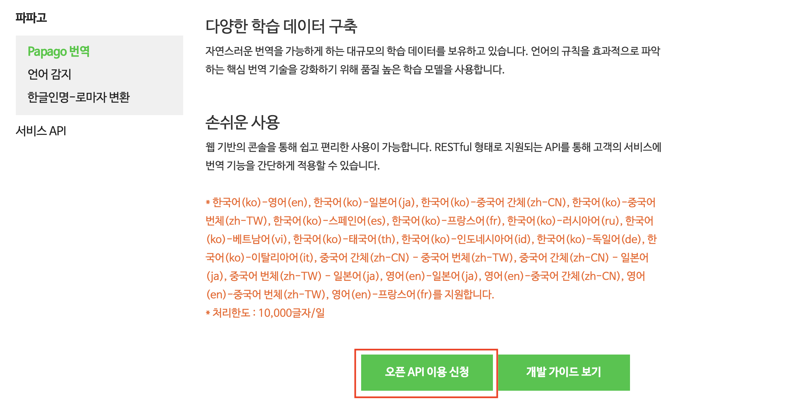
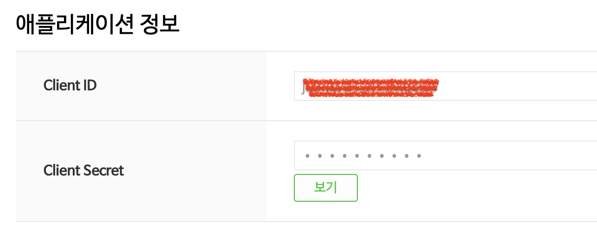
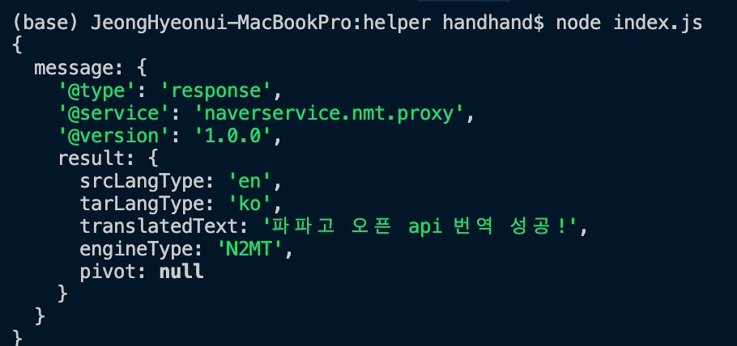

Node.js에서 네이버 Open API 활용하기
네이버 오픈 API란?
네이버는 개발자들이 활용할수있도록 다양한 기능들을 오픈 API 형태로 제공하고 있습니다.
이번 포스팅에서는 네이버 Open API에 대한 설명과 이를 활용할 수 있는 방법들에 대해 소개하겠습니다.
네이버 개발자 홈페이지에 가보면 다음과 같이 오픈 API를 정의하고 있습니다.
네이버 오픈API는 네이버 플랫폼의 기능을 외부 개발자가 쉽게 이용할 수 있게 웹 또는 SDK 형태로 공개한 기술들입니다.
쉽게 말해 네이버에서 외부 개발자들이 자사의 다양한 서비스들을 이용할 수 있도록 외부에 공개해놓은 것입니다.
저희는 해당 API를 사용하기 위해 주어진 형식에 맞춰 요청을 보내주기만 하면 됩니다.
네이버 개발자 홈페이지에 가면 활용 가능한 오픈 API들을 확인할 수 있습니다.
네이버 오픈 API 활용하기
네이버 오픈 API는 크게 두 가지로 분류됩니다.
- 로그인 방식
- 비로그인 방식
로그인 방식은 회원 정보가 필요한 API(회원 정보 조회, 블로그 및 카페, 개인 일정 관련 기능)들을 사용할 때 이용하는 방식입니다.
해당 API를 사용하기 위해서는 먼저 로그인을 통해 인증과정을 거친 후 발급받은 토큰을 API 요청에 포함시켜줘야 합니다.
반대로 비로그인 방식은 별도의 인증 과정없이 개발자가 HTTP 헤더에 클라이언트 정보를 함께 전송하기만 하면 이용할 수 있는 방식입니다.
클라이언트 정보?
네이버 오픈 API를 활용하기 위해서는 기본적으로 원하는 API에 대해 사용 신청이 필요합니다.
이때 신청 후 발급받은 유저 정보를 의미합니다.
파파고 오픈 API
네이버 파파고 오픈 API는 자연어 처리 관련 다양한 인공지능 기술들을 개발자들이 쉽게 이용할 수 있도록 오픈 API로 제공하고 있습니다.
이번 포스팅에서는 파파고의 번역 기능을 활용하여 주어진 텍스트를 번역한 뒤 결과를 확인해보도록 하겠습니다.
우선 네이버 파파고 API 홈페이지로 가서 API 이용 신청을 해야합니다.

이용 신청을 누르면 다음과 같은 신청 폼을 작성하게 됩니다.
- 애플리케이션 이름 : 파파고 오픈 API를 활용할 애플리케이션 이름 작성
- 사용 API : 해당 애플리케이션에서 사용할 오픈 API들을 선택합니다. (복수 선택 가능)
- 비로그인 오픈 API 서비스 환경 : 네이버에게 어떤 환경에서 해당 API가 활용되는지 알려줍니다.
저는 현재 로컬 환경에서 테스트를 진행한 후 WEB환경에서 이를 활용할 것이므로
비로그인 오픈 API 환경을 WEB 로 하고 URL로 로컬 호스트임을 나타내는 https://localhost:3000/ 를 입력하고 신청을 마치겠습니다.

모든 신청을 마무리하면 위와 같이 클라이언트 ID와 Password를 발급해줍니다.
이후의 샘플 코드에서 이 정보를 활용합니다.
샘플 코드 작성
이제 테스트 코드를 작성하고 해당 API가 잘 동작하는지 확인해보겠습니다.
이를 위해 새로운 프로젝트를 생성한 뒤 package.json을 생성하고 request 모듈을 설치합니다.
프로젝트 npm 설정 (package.json 생성)
npm init
request 모듈 설치
npm i request
request 모듈은 http 통신을 위한 npm 패키지입니다.
sample.js
const request = require("request");
// api 요청 변수
const api_url = "https://openapi.naver.com/v1/papago/n2mt";
const client_id = "your-client-id";
const client_secret = "your-client-secret-key";
const query = "papago open api translation success!";
// api 요청 옵션 (번역: 영어 -> 한글)
const options = {
url: api_url,
form: { source: "en", target: "ko", text: query },
headers: {
"X-Naver-Client-Id": client_id,
"X-Naver-Client-Secret": client_secret,
},
};
// api 요청 보내고 콜백으로 결과 받기
request.post(options, function (error, response, body) {
if (!error && response.statusCode == 200) {
console.log(JSON.parse(body));
} else {
console.log("error = " + response.statusCode);
}
});
앞서 설치한 request 모듈을 통해 API 주소로 http 요청을 보내면 해당 API가 클라이언트 검증을 한 뒤 결과값을 JSON 형식으로 반환해줍니다.
이때 request 모듈의 post 함수는 비동기 방식으로 수행되므로 콜백 함수를 등록하여 결과값을 확인합니다.
결과 확인

만약 성공적으로 요청이 전송되면 위와 같은 결과를 확인할 수 있습니다.
주어진 입력 값에 따라 번역이 올바르게 진행된 것을 알 수 있습니다.
주의!
request 모듈은 2020년 2월 11일 부로 deprecated 되었습니다.
이번 예제에서는 간단한 테스트를 위해 request 모듈을 사용했지만
실제 서비스에서는 http 통신을 위해 다른 패키지를 사용하는 것을 검토할 필요가 있습니다.
request 모듈 deprecated 관련 공지
request 모듈을 대체할 수 있는 패키지들
마치며
네이버 뿐만 아니라 다양한 기업 혹은 공공기관에서 제공하는 오픈 API를 활용하면 훨씬 더 다양한 애플리케이션 개발이 가능해집니다.
본인이 필요한 API를 검색해본 뒤 마찬가지 방법으로 활용하면 될 것입니다.
참고 자료
- https://developers.naver.com/docs/papago/papago-nmt-overview.md